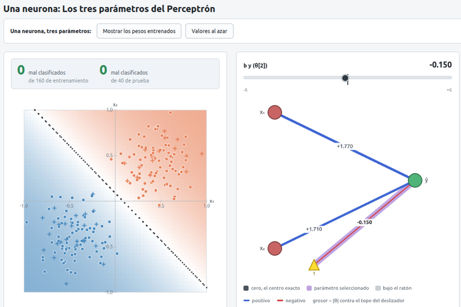
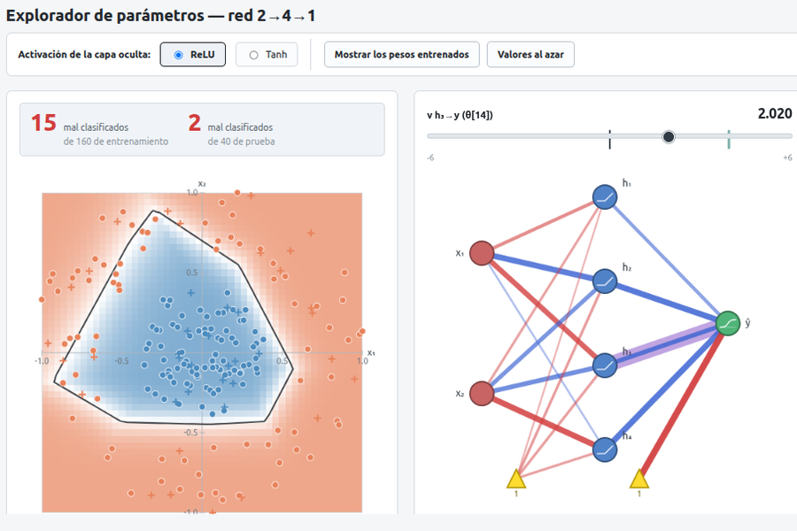
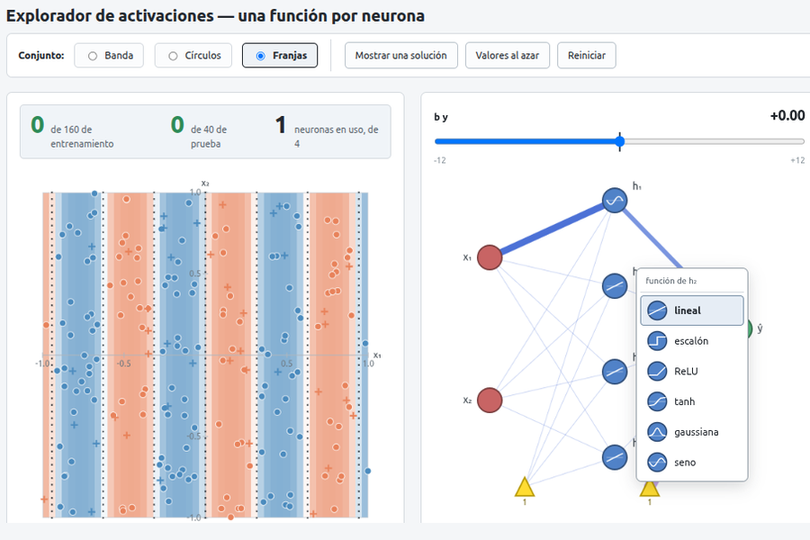
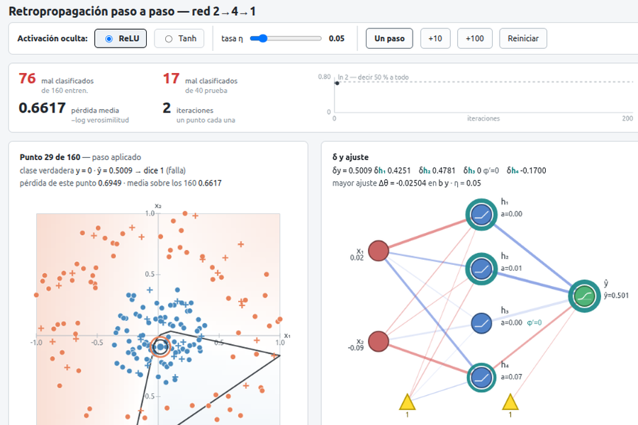

BasicRNA
Cuatro páginas sueltas para las primeras clases sobre redes neuronales. Cada una es un archivo HTML único, sin dependencias y sin instalación: se abre y dibuja. Aquí no se configura nada —los hiperparámetros llegan después, con TalleRNA—: en las tres primeras el alumno mueve los parámetros a mano y ve qué le pasa a la frontera, y la cuarta entrena exponiendo uno solo, la tasa de aprendizaje.
Conviene recorrerlas en orden: cada una deja una pregunta que contesta la siguiente.

Una neurona: los tres parámetros del perceptrón
Cada parámetro hace algo que se puede decir en una frase: los dos pesos giran la recta, el sesgo la desplaza. Se llega a cero errores a mano.
1-Perceptron.html
Explorador de parámetros — red 2→4→1
Los mismos deslizadores, ahora diecisiete, sobre datos que ninguna recta separa. La intuición de la página anterior ya no alcanza, y ése es el punto.
2-EditParam.html
Explorador de activaciones — una función por neurona
Seis funciones, elegidas neurona por neurona. Cada una es una casilla distinta y la casilla se ve en el mapa: con franjas, una sola neurona seno lo resuelve y cuatro ReLU no llegan nunca.
3-EditActivFun.html
Retropropagación paso a paso
La red y los datos de la segunda página, pero aquí no se mueve nada a mano: se ve cómo los mueve el algoritmo, un punto a la vez, con el error regresando por la red.
4-Backprop.html